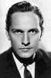
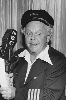
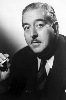
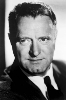

Country:United States, 77 minutes
Spoken languages:
Genres:Comedy, Romance
Director(s):William A. Wellman
Writer(s):Ben Hecht
Video Codec:Unknown
Number: 1453


Certification:NR
Storyline:
When a small-town girl is incorrectly diagnosed with a rare, deadly disease, an unknowing newspaper columnist turns her into a national heroine.
Cast:    
Medium: Original DVD,
Comments: Part of: Leading Ladies - Classic 20 Movie Collection
Loaned: No
Aspect ratio: Unknown